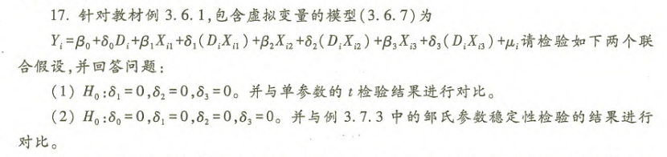
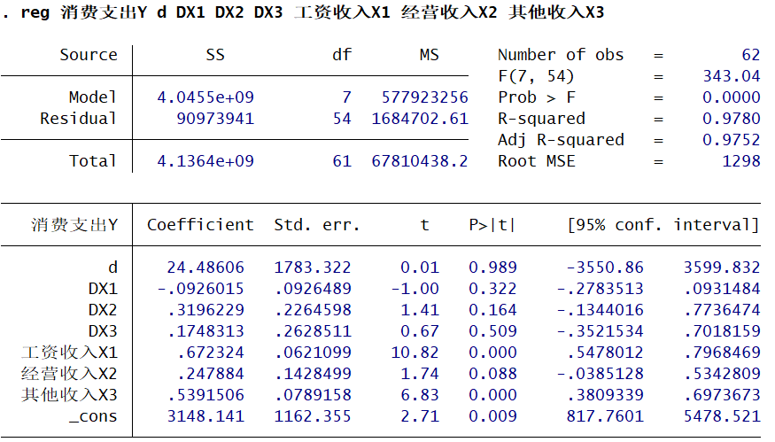
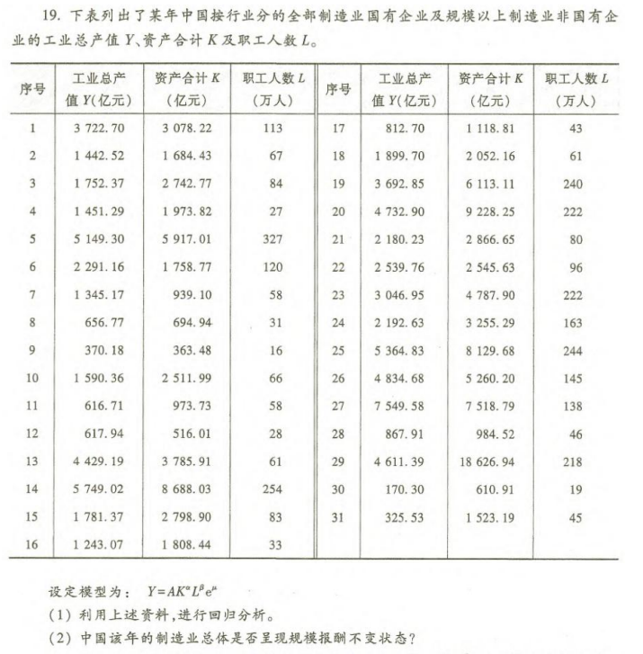
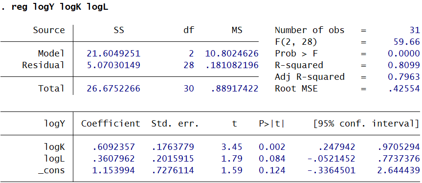

本期内容
- 含虚拟变量的多元线性回归
- 受约束回归
- 实例演示
含虚拟变量的多元线性回归
虚拟变量的概念
虚拟变量（$D$）是一种用于量化定性因素（如性别、地区、政策变动）的工具。它将无法直接度量的属性“数字化”，通常取值为0或1。
- 核心逻辑：通过构造一个人工变量，将样本划分为两个组别。
- 取值含义：
- $D=1$：表示属于某个特定类别（如：城镇居民、改革后时期、男性）。
- $D=0$：表示属于另一个基准类别（如：农村居民、改革前时期、女性）。
虚拟变量的引入
引入虚拟变量主要有两种方式：加法方式（改变截距）和乘法方式（改变斜率）。
加法方式 (Additive Form)
- 形式：$Y_i = \beta_0 + \beta_1 X_i + \delta D_i + \mu_i$
- 含义：虚拟变量 $D$ 仅影响模型的截距，不改变解释变量 $X$ 的斜率。
- 效应分析：
- 当 $D=0$（基准组）：$E(Y_i|X_i, D=0) = \beta_0 + \beta_1 X_i$
- 当 $D=1$（对照组）：$E(Y_i|X_i, D=1) = (\beta_0 + \delta) + \beta_1 X_i$
- 结论：两组的回归线平行，$\delta$ 代表两组在截距上的差异（如：城镇居民的基础消费水平比农村高 $\delta$）。
乘法方式 (Multiplicative Form / Interaction)
- 形式：$Y_i = \beta_0 + \beta_1 X_i + \gamma (D_i X_i) + \mu_i$
- 含义：虚拟变量 $D$ 与解释变量 $X$ 交互，主要影响模型的斜率（边际效应），或者在截距和斜率上同时产生差异。
- 效应分析：
- 当 $D=0$：$E(Y_i|X_i, D=0) = \beta_0 + \beta_1 X_i$
- 当 $D=1$：$E(Y_i|X_i, D=1) = \beta_0 + (\beta_1 + \gamma) X_i$
- 结论：两组的回归线斜率不同，$\gamma$ 代表边际效应的差异（如：城镇居民的边际消费倾向比农村高 $\gamma$）。
虚拟变量的设置原则
为什么取值是 0 和 1？
- 0-1 编码的本质：这种设置是为了让回归系数 $\delta$ 具有明确的经济含义（即组间差异）。
- 如果设为 1, 2, 3…：若将类别编码为 1, 2, 3（例如：小学=1，中学=2，大学=3），模型会误认为这是定量数据，并强制假设它们之间存在等距的线性关系（即大学-中学的差距=中学-小学的差距）。这在大多数定性分类中是不成立的。
- 0-1 的优势：0 作为基准（参照组），1 作为触发器。当 $D=0$ 时，该项消失；当 $D=1$ 时，该项直接加上系数 $\delta$，直观表示相对于基准组的“溢价”或“折价”。
“掉入陷阱”与设置数量
- 原则：如果一个定性变量有 $m$ 个类别，只能引入 $m-1$ 个虚拟变量。
- 原因：完全多重共线性（Dummy Variable Trap）。如果所有类别都设为 1（即引入了 $m$ 个变量），会导致设计矩阵 $X$ 不满秩，无法计算逆矩阵，参数估计失效。
- 例如：季节（春、夏、秋、冬）有 4 个类别，只需设置 3 个虚拟变量。第 4 个类别（如冬季）由所有虚拟变量均为 0 来表示。
受约束回归
当根据经济理论或先验信息对模型参数施加特定限制（如规模报酬不变）时，需进行受约束回归分析。
模型参数的线性约束
-
核心不等式：受约束模型的残差平方和（$RSS_R$）恒大于或等于无约束模型的残差平方和（$RSS_U$）。
- $RSS_R \ge RSS_U$
- 含义：增加约束条件会降低模型的拟合优度（增大残差），若约束不成立，差异显著；若约束成立，差异微小。
-
检验统计量 (F-Statistic)： 为了检验约束条件是否成立（即 $RSS_R$ 的增加是否显著），构建如下统计量：
$$F = \frac{(RSS_R - RSS_U)/(k_U - k_R)}{RSS_U/(n - k_U - 1)} \sim F(k_U - k_R, n - k_U - 1)$$- $RSS_R$: 受约束模型的残差平方和
- $RSS_U$: 无约束模型的残差平方和
- $k_U$: 无约束模型解释变量个数
- $k_R$: 受约束模型解释变量个数
- $n$: 样本容量
-
检验逻辑：
- 假设：$H_0$ (约束成立) vs $H_1$ (约束不成立)。
- 计算：分别跑出受约束和无约束模型，计算 $RSS$ 并代入公式求 $F$ 值。
- 判断：若计算出的 $F$ 值大于临界值 $F_\alpha$，则拒绝原假设，认为约束条件不成立（即参数不满足该线性关系）；反之则接受约束。
对回归模型增加或减少解释变量
增加或减少解释变量可视为一种特殊的受约束回归（变量系数为0的约束）。
-
场景定义：
- 全模型 (U)：包含 $k+q$ 个解释变量。
- 子模型 (R)：仅包含 $k$ 个解释变量（相当于对另外 $q$ 个变量的系数施加了等于0的约束）。
-
核心公式 (F-Test for Variable Addition/Deletion)： 用于检验新增的 $q$ 个变量是否对解释被解释变量有显著贡献：
$$F = \frac{(RSS_R - RSS_U)/q}{RSS_U/(n - k - q - 1)} \sim F(q, n - k - q - 1)$$- 分子含义：新增变量带来的残差平方和的“改善程度”。
- 分母含义：全模型的误差方差。
-
决策原则：
- 若 $F$ 值显著（大于临界值），说明新增变量联合显著，应保留（或原约束 $\beta_{k+1}=…=0$ 不成立）。
- 若 $F$ 值不显著，说明新增变量无显著贡献，可剔除以简化模型。
检验不同组织间回归模型的差异
检验两个不同组别（如城镇vs农村、改革前vs改革后）的回归模型是否存在结构性差异，即参数是否稳定。
-
视为何种约束： 这被视为对两组样本的回归系数是否相等的约束检验（Chow Test）。
- 原假设 $H_0$：两组样本回归系数相同（结构稳定，无差异）。
- 备择假设 $H_1$：两组样本回归系数不同（结构不稳定，存在差异）。
-
统计量与分布： 构造 F 统计量来检验结构稳定性：
$$F = \frac{[RSS_R - (RSS_1 + RSS_2)]/(k+1)}{(RSS_1 + RSS_2)/(n_1 + n_2 - 2(k+1))} \sim F(k+1, n_1+n_2-2k-2)$$- $RSS_1, RSS_2$：分别对两组样本回归得到的残差平方和。
- $RSS_R$：将两组合并为一个大样本回归得到的残差平方和。
- $k+1$：模型参数个数（含截距）。
-
检验步骤：
- 分别对两组样本进行回归，得到 $RSS_1$ 和 $RSS_2$。
- 将两组合并，进行全样本回归，得到 $RSS_R$。
- 代入公式计算 $F$ 值。
- 若 $F$ 值显著，拒绝 $H_0$，说明两组样本的回归模型存在显著差异（结构发生断裂）；若不显著，则说明模型结构稳定，可以合并回归。
实例演示
例一
该部分例子来源于李子奈《计量经济学：第五版》第三章练习题第17题。

下面先给出第一问的代码与解答：
|
|
无约束回归结果如下所示：



接下来给出第二问的代码与解答：
|
|
无约束回归的结果与之前一致，因此不再展示。 手动实现F检验结果如下所示：


例二
该部分例子来源于李子奈《计量经济学：第五版》第三章练习题第19题。

|
|
无约束回归结果如下所示：

对于各个回归参数的显著性，logK回归参数 为0.609，对应p值为0.002，在1%水平下显著，这表明logK对logY的影响较为明显，logL的回归参数 为0.0361，对应p值为0.084，在10%水平下显著，这表明logL对logY也有一定影响，但相较于logK对logY的影响要弱很多。
接下来给出第二问的代码与解答：
|
|
第二问的规模不变假设，转化为数学形式即
$$H_0:logK与logL的回归参数和为1$$接下来只要针对这一约束条件进行F检验即可。 无约束回归的结果在上一问已经呈现，这里不再展示。 手动实现F检验结果如下所示：